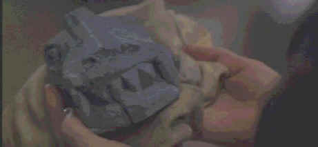

Relic/D,D
Relic is the largest piece of reptile irrelevance ever discovered in Hollywood. Peter Hyams should be ashamed of himself. If I were the director of Relic I would have fired the cinematographer before he made a disaster of my movie. But then that's a problem for Hyams since he is own cinematographer. The film is either shot so dark to hide how bad it is or the transfer guys sapped out whatever light there was before foisting on an unsuspecting video audience. Not only is this movie unremittingly dark, it is edited in such a frenzy you'd swear the creature was after the filmmakers. And why not go after the filmmakers in this case. They deserve a fate worse than a grand payday. They are the ones that should have been food for an out of control Relic.
 |
The stuff of which movie creatures are made. ©Paramount |
Tapping into
the tradition of Mummy films and their archeological basis of knowledge, Relic
starts out in the South American jungles in a hodge-podge Indian ceremony. Next thing you
know a crate containing the seeds of the next would-be great movie monster are on their
way to a big American museum to show off to a black tie fund-raising crowd. Rest assured
this is not going to be a happy party even though all the cliché characters are sure to
get their comeuppance. There's a competition going on for a museum grant and a messy
murder to solve. Will the black tie benefit go on as scheduled or will the police
investigation blow the big buck party.
I couldn't even tell if the story was any good. I spent most of
the time trying to guess which character was carrying what flashlight in the dark. Oh,
painful. The choppy editing actually gave me a headache or was it the squinting to make
out the beautiful features of Penelope Ann Miller and the creature work of Stan Winston.
Lizard lovers beware: this big guy doesn't even look good dressed
in his best transfer uniform. Relic may be delivered in an anamorphic transfer from
Paramount, but the extra lines of resolution provided no added information that was
visible in the darkest transfer of the year. That's a distinction though, darkest transfer
of the year. Well, the sound is loud, and is used for some cheap effects to try to scare
the living lizard blood out its audience, but it doesn't work that well. So what if the
surrounds on this Dolby 5:1 surround sound are actively invested with splashing water,
crushing bones, screams in the darks and lots of smashed glass. I might have even left the
home theater in the middle of this dim idea but there wasn't enough light to find my way
out. Stuck in the dark with the Relic. Oh what a fate.
It had to be worse for lead actors Tom Sizemore and Penelope Ann
Miller. Miller's best close-up comes when the lovely lizard licks at her lasciviously and
Sizemore is really lost in the blackened catacombs of this museum thriller. This was his
great chance to become an action hero and now he'll probably wind up just another Relic.